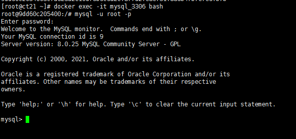
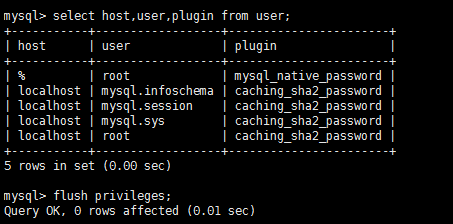
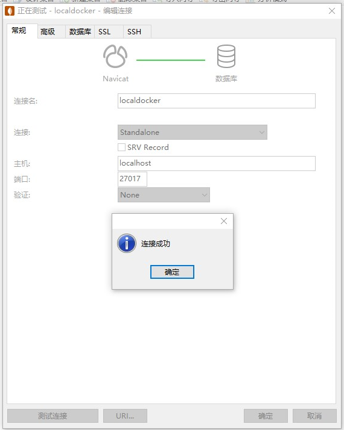

Docker是一个开源的应用容器引擎，他直接安装在操作系统之上。
Docker主机：安装了docker程序的计算机
Docker客户端：连接主机进行操作的程序
Docker仓库（Registry）：存放各种打包好的软件镜像
Docker镜像（Images）： 软件的打包
Docker容器（Container）： 镜像启动后的实例
Docker公共仓库：hub.docker.com
uname -r 先检查liunx内核版本，要求高于3.1
yum install docker -y 安装
systemctl start docker 启动
systemctl enable docker 开机自动启动
systemctl stop docker 停止、关闭服务
docker -v 查看版本
docker search 镜像名称
docker pull 镜像名称:tag
docker save -o 文件名.tar 镜像名称:tag
docker load -i 文件名.tar
docker commit -a 作者 -c Dockerfile -m 提交信息 -p 容器名 镜像名:tag
-p 暂停容器，停止的容器不需要此参数
docker images
docker rmi 镜像名称:tag
docker build -t 镜像名称:tag .
docker run --name 容器名 -p 主机端口:容器端口 -d 镜像名称:tag [执行命令]
-m,--memory 内存限制,格式是数字加单位。单位可以为b,k,m,g。最小为4M
--meIory-swap 内存+交换分区大小总限制。格式同上。必须必-m设置的大
--memory-reservation内存的软性限制。格式同上
--oom-kill-disable 是否阻止OOM killer杀死容器,默认没设置
--oom-score-adj 容器被OOM killer 杀死的优先级，范围是[-1000,1000]，默认为O
--memory-swappiness 用于设置容器的虚拟内存控制行为。值为0~100之间的整数
--kernel-memory 核心内存限制。格式同上,最小为4M
--cpuset-cpus="" 允许使用的CPU集，值可以为0-3,0,1
-c,--cpu-shares=0 CPU共享权值(相对权重)
cpu-period=0 限制CPU CFS的周期，范围从10oms~1s，即[1000,100000o]
--cpu-quota-0 限制CPU CFS配额，必须不小于1ms，即>= 1000
--cpuset-memS="" 允许在上执行的内存节点(MEMS)，只对 NUMA 系统有效
在有多个容器竞争 CPU 时我们可以设置每个容器能使用的 CPU 时间比例。这个比例叫作共享权值，通过-c或--cpu-shares设置。Docker 默认每个容器的权值为1024。不设置或将其设置为0，都将使用这个默认值。系统会根据每个容器的共享权值和所有容器共享权值和比例来给容器分配 CPU 时间。
docker exec -it 容器id/名称 /bin/bash
docker stop 容器id/名称
docker rm 容器id/名称
docker ps -a
-a 所有容器
docker inspect 容器id/名称
docker inspect 容器id/名称 | grep Mounts -A 20 查看容器目录映射
1.停止Docker服务 systemctl stop docker
2.进入Docker容器的配置文件目录 cd /var/lib/docker/containers/
修改映射文件 vim hostconfig.json
docker network create --driver brigde [--subnet 172.30.0.0/24 --gateway 172.30.0.1] 名称
--driver brigde 驱动 默认桥接
--subnet 自定义网段
--gateway 自定义网关
docker network rm 名称
docker network ls
docker network inspect 名称
docker network disconnect 网络名称 容器名称
docker network connect 网络名称 容器名称
更改容器网络模式需要重启容器
配置代理文件，适用于所有通过守护进程启动的容器和构建操作。
mkdir -p /etc/systemd/system/docker.service.d
vi /etc/systemd/system/docker.service.d/http-proxy.conf
[Service]
Environment="HTTP_PROXY=http://your-proxy-address:port/"
Environment="HTTPS_PROXY=http://your-proxy-address:port/"
保存退出后，启动docker服务
systemctl daemon-reload
systemctl restart docker
如果只为特定的Docker容器配置网络代理，可以在运行容器时通过--env参数指定
docker run -it --env HTTP_PROXY="http://your-proxy-address:port" --env HTTPS_PROXY="http://your-proxy-address:port" ...
docker search mysql
docker pull mysql 也可指定具体tag，不指定默认拉取latest
docker run --name mysql_3306 -v /home/mysql8/data:/var/lib/mysql --network mynet -e MYSQL_ROOT_PASSWORD=123456 -p 3306:3306 -d mysql:8.0.3
docker exec -it mysql_3306 bash
mysql -u root -p
use mysql;
alter user 'root'@'localhost' IDENTIFIED WITH mysql_native_password BY 'admin_sql';
flush privileges;
select host,user,plugin from user;
从容器复制出配置文件
docker cp mysql_3306:/etc/mysql/my.cnf ./my.cnf
symbolic-links=0
character_set_server=utf8
default-time-zone = '+08:00'
log-bin-trust-function-creators = 1
innodb_buffer_pool_size=2147483648
[mysql]
default-character-set = utf8
[mysql.server]
default-character-set = utf8
[mysqld_safe]
default-character-set = utf8
[client]
default-character-set = utf8
修改后的配置复制进容器并重启
docker cp ./my.cnf mysql_3306:/etc/mysql/my.cnf
docker restart mysql_3306
使用mysqldump备份指定的数据库，并通过java压缩上传OSS进行安全备份
vi bakcup.sh
#!/bin/bash
dd=`date +%Y%m%d_%H%M%S`
/usr/bin/docker exec mysql8 mysqldump -uroot -p密码 指定的数据库 > /www/mysql8/bak/$dd.sql
/usr/bin/docker run --name upbakmysql -v /www/jars:/root -v /www/mysql8/bak:/bak -w /root -d --rm --privileged=true openjdk:8 java -Djava.security.egd=file:/dev/./urandom -jar /root/upqiniu.jar mysql $dd
echo mysql bakcup task start $dd over `date +%Y%m%d_%H%M%S`
chmod a+x bakcup.sh
vi /etc/crontab
在liunx系统定时任务文件追加如下内容：
5 18 * * * root /www/mysql8/bakcup.sh
即：在每天的18：05时，以root身份执行定时备份的脚本
先运行容器获取默认的配置文件
docker run --name nginx -p 8080:80 -d nginx:1.25.1
docker cp nginx:/usr/share/nginx/html/index.html ./html/
docker cp nginx:/usr/share/nginx/html/50x.html ./html/
docker cp nginx:/etc/nginx/nginx.conf ./
修改配置文件
user nginx;
worker_processes auto;
error_log /var/log/nginx/error.log notice;
pid /var/run/nginx.pid;
events {
worker_connections 1024;
}
http {
include /etc/nginx/mime.types;
default_type application/octet-stream;
log_format main '$remote_addr - $remote_user [$time_local] "$request" '
'$status $body_bytes_sent "$http_referer" '
'"$http_user_agent" "$http_x_forwarded_for"';
access_log /var/log/nginx/access.log main;
sendfile on;
#tcp_nopush on;
keepalive_timeout 65;
client_max_body_size 128m;
#gzip on;
# 这一段替换原有的include配置
server {
listen 80;
server_name localhost;
#access_log /var/log/nginx/host.access.log main;
location / {
root /html;
index index.html index.htm;
}
error_page 500 502 503 504 /50x.html;
location = /50x.html {
root /html;
}
}
}
docker run --name nginx-8001 -v /root/docker/nginx/nginx.conf:/etc/nginx/nginx.conf -v /root/docker/nginx/html:/html -p 8001:80 -d nginx:1.25.1
Redis默认是无配置文件的，需要准备redis.conf
databases 10
save 900 1
save 300 10
save 60 10000
rdbcompression yes
rdbchecksum yes
# The filename where to dump the DB
dbfilename dump.rdb
# The working directory.
#
# The DB will be written inside this directory, with the filename specified
# above using the 'dbfilename' configuration directive.
#
# The Append Only File will also be created inside this directory.
#
# Note that you must specify a directory here, not a file name.
dir ./
# maxmemory bytes
appendonly no
notify-keyspace-events Ex
daemonize no
docker run -p 6379:6379 --name redis_6379 -v /root/docker/redis/redis.conf:/etc/redis/redis.conf -v /root/docker/redis/data:/data -d redis:5.0.14 redis-server /etc/redis/redis.conf
docker run --name mongo_27017 -p 27017:27017 -v /root/docker/mongo/data:/data/db -d mongo:3.6
docker run --name mongo_27017 -p 27017:27017 -v /root/docker/mongo/data:/data/db -d mongo:3.6 --auth
docker exec -it mongo_27017 mongo admin
// 切换admin库
use admin
// 创建用户并赋予root权限
db.createUser({user:"root",pwd:"123456",roles:[{ role: "root", db: "admin" }]})
db.auth("root", "123456")
由于Oracle数据库为非免费数据库，无官服免费的镜像可用
docker run -d -p 1521:1521 --name oracle11g -v /root/docker/oracle/data:/home/oracle/app/oracle/oradata/helowin registry.cn-hangzhou.aliyuncs.com/helowin/oracle_11g
docker exec -it oracle11g bash
su - root 密码helowin
vi /etc/profile 追加如下配置
export ORACLE_HOME=/home/oracle/app/oracle/product/11.2.0/dbhome_2
export ORACLE_SID=helowin
export PATH=$ORACLE_HOME/bin:$PATH
保存退出后，执行 source /etc/profile 使环境变量生效
su - oracle
本地登录 sqlplus / as sysdba 重置 sys system密码
这个镜像没有直接安装好oracle，只是配置好了环境，并提供了安装脚本，需要按照要求把oracle的安装目录配置好，启动镜像，即可安装，安装完成后可以删除安装包（保留映射目录）
从Oracle官网下载Linux版64位安装包并上传、解压至/root/docker/oracle/database
chmod -R 777 /root/docker/oracle/database
docker run --privileged --name oracle11g_1521 -p 1521:1521 -v /root/docker/oracle/database:/install/database jaspeen/oracle-11g
安装会卡住终端，可开启新终端查看容器运行情况；
安装成功后可进入容器通过 sqlplus / as sysdba重置 sys system密码
ALTER user sys identified by '';
ALTER user system identified by '';
-- 设置密码不过期
alter profile default limit password_life_time unlimited;
docker run -d --name neo4j-35 -p 7474:7474 -p 7687:7687 -v /root/docker/neo4j/data:/data -v /root/docker/neo4j/logs:/logs -v /d/docker/neo4j/conf:/var/lib/neo4j/conf -v /root/docker/neo4j/import:/var/lib/neo4j/import --env NEO4J_AUTH=neo4j/admin1 neo4j:3.5.28-community
默认的密码不能是neo4j，否则服务无法正常启动
7474是web功能端口 7687为数据访问端口
docker run -d -p 2021:21 -p 2020:20 -p 21100-21110:21100-21110 \
-v /root/docker/ftp:/home/vsftpd/ftp \
-e FTP_USER=ftp \
-e FTP_PASS=123123 \
-e PASV_ADDRESS=192.168.10.221 \
-e PASV_MIN_PORT=21100 \
-e PASV_MAX_PORT=21110 \
--name vsftpd fauria/vsftpd
FTP_USER 指定 用户名，要与挂载路径下的/home/vsftpd/用户名 保持一致
FTP_PASS 指定用户密码
PASV_ADDRESS 宿主机真实IP
docker run -d --privileged=true -p 9200:9200 -p 9300:9300 -e "discovery.type=single-node" -e ES_JAVA_OPTS="-Xms1024m -Xmx1024m" --name elasticsearch elasticsearch:7.14.0
discovery.type=single-node 单机模式
进入容器修改config/elasticsearch.yml，增加如下配置以开启跨域
http.cors.enabled: true
http.cors.allow-origin: "*"
退出容器并重启， 等待片刻在浏览器访问 http://ip:9200/ 看到如下内容
{
"name" : "aa3ed90e4a82",
"cluster_name" : "docker-cluster",
"cluster_uuid" : "DbYLu5ohSgaEvd5KLPzYFQ",
"version" : {
"number" : "7.14.0",
"build_flavor" : "default",
"build_type" : "docker",
"build_hash" : "dd5a0a2acaa2045ff9624f3729fc8a6f40835aa1",
"build_date" : "2021-07-29T20:49:32.864135063Z",
"build_snapshot" : false,
"lucene_version" : "8.9.0",
"minimum_wire_compatibility_version" : "6.8.0",
"minimum_index_compatibility_version" : "6.0.0-beta1"
},
"tagline" : "You Know, for Search"
}
docker run -d -p 8081:8081 --name nexus-8081 sonatype/nexus3:3.42.0
查看初始密码 需要等一会
docker exec nexus-8081 cat /nexus-data/admin.password
此容器需要等待内置数据库完全停止
docker stop --time=120 nexus-8081
docker run -it --rm --privileged=true \
-v /root/docker/maven/boot-demo-2.2.2:/project \
-v /root/docker/maven/repo:/root/.m2/repository \
-w /project --name maven maven:3.6.3-jdk-8 mvn clean package
--rm 容器运行完成后立即删除
-v /root/docker/maven/repo:/root/.m2/repository 挂载maven仓库以便复用
-w /project 指定工作目录为项目挂载的目录
打包完成后可进入宿主机项目路径/target查看成果
打包springboot工程的可执行的boot.jar，编写Dockerfile文件：
FROM java:8
MAINTAINER peiwt
VOLUME /tmp
RUN ln -sf /usr/share/zoneinfo/Asia/Shanghai /etc/localtime
RUN mkdir -p /root/jars
WORKDIR /root/jars
EXPOSE 8080
ADD ./boot.jar ./app.jar
CMD sleep 30;java -Xms128m -Xmx512m -Djava.security.egd=file:/dev/./urandom -jar app.jar
docker build -t boot:1.0
docker run -d -p 8080:8080 --name boot-8080 boot:1.0
准备sentinel-1.8.0.jar并将其web端口改为9090，编写Dockerfile文件：
FROM java:8
MAINTAINER peiwt
VOLUME /tmp
RUN ln -sf /usr/share/zoneinfo/Asia/Shanghai /etc/localtime
RUN mkdir -p /root/jars
WORKDIR /root/jars
EXPOSE 9090
ADD ./sentinel-1.8.0.jar ./app.jar
CMD sleep 30;java -Xms128m -Xmx512m -Djava.security.egd=file:/dev/./urandom -jar app.jar
docker build -t sentinel:1.8.0 .
docker run -d -p 9090:9090 --name sentinel-9090 sentinel:1.8.0